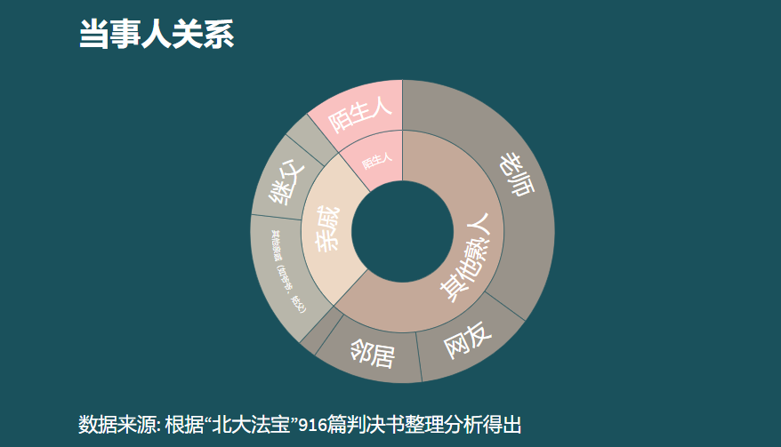

“大概只花了半年的时间，鲍某明就彻底取得了李星星母女的信任。他的关怀备至，以及律师、名校毕业生的身份，让李星星的母亲相信，鲍某明“可靠”，“确实就像个爸爸”，他的学问高，如果把女儿交给他教育，肯定比自己带在身边要强。”

在我们搜集到的213条有施害者和受害者关系的记录的文书中，有74条记录为师生关系，占比34%，53条记录为亲戚关系，占比24%，其中18条记录为继父女（或母亲同居男友），6条为亲生父亲。
家庭内部性侵事件并非个例，这53条记录更有可能只是此类事情的冰山一角。我国“以家庭为中心”的价值观可能会掩盖家庭内部的儿童性侵犯案件，也加大了我国司法部门干预这一问题的难度。家庭内部的性侵更隐秘、更难被发现，当亲密的互动发生在家庭成员之间，复杂的关系和情感不仅会使性侵的边界变得模糊，也会使披露或举报更加困难。
男性并不是不会被性侵。2019年，BBC纪录片《被性侵的男性：打破沉默》披露了一组令人触目惊心的数据：每小时，约有8名男性遭到性侵。在人生的不同阶段，1/6的男性遭到不同程度的性侵。
可是90%的受害者对此穷其一生保持缄默——对于大多数男性性侵受害者而言，“女性是受害者、男性是加害者”的固有二元对立假设，阻碍了许多男性求助，“性别”是他们创伤中至关重要的一环，也是他们难以开口的痛点。
值得注意的是，在50起受害者为男性的案例中，有9起是“网站预约男童有偿性服务”。施害者通过网络，或是通过男童性服务中介介绍，与男童取得联系，在旅馆等约定地点用例如肛交、手淫、口交等方式对男童进行性侵。由于我国法律界定的强奸罪定义为“以暴力、胁迫或者其他手段强奸妇女”，因此当受害者为男性时，尽管发生了事实上的奸淫，但无法被判定为强奸罪。
同时我们发现，在这9起“网站预约男童有偿性服务”案件中，有6起案件的受害者都签署了谅解书，获得20000元至60000元不等的赔偿金额，达到了2/3，而对于整体916起案件来说，因赔偿而谅解的案件比例为19.76%。目前在我国，“娈童恋”还未引起足够的重视，通过网络进行的男童有偿性服务需要被关注.